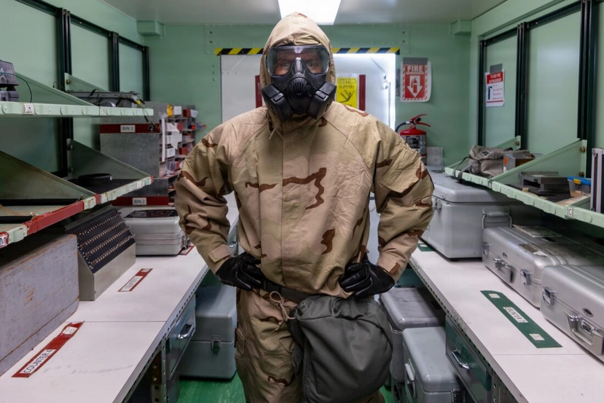
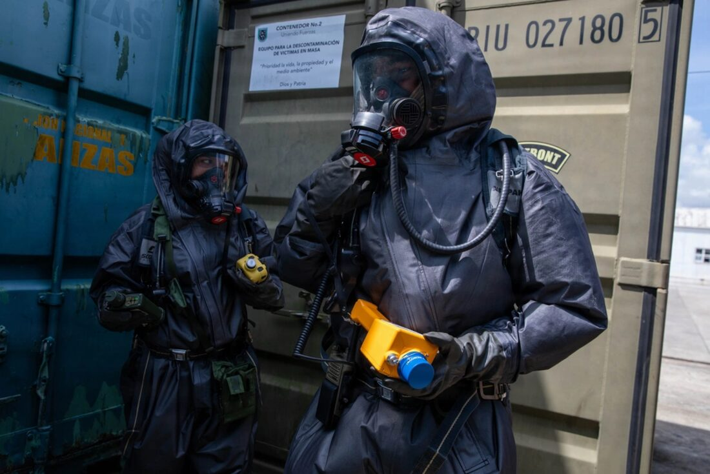
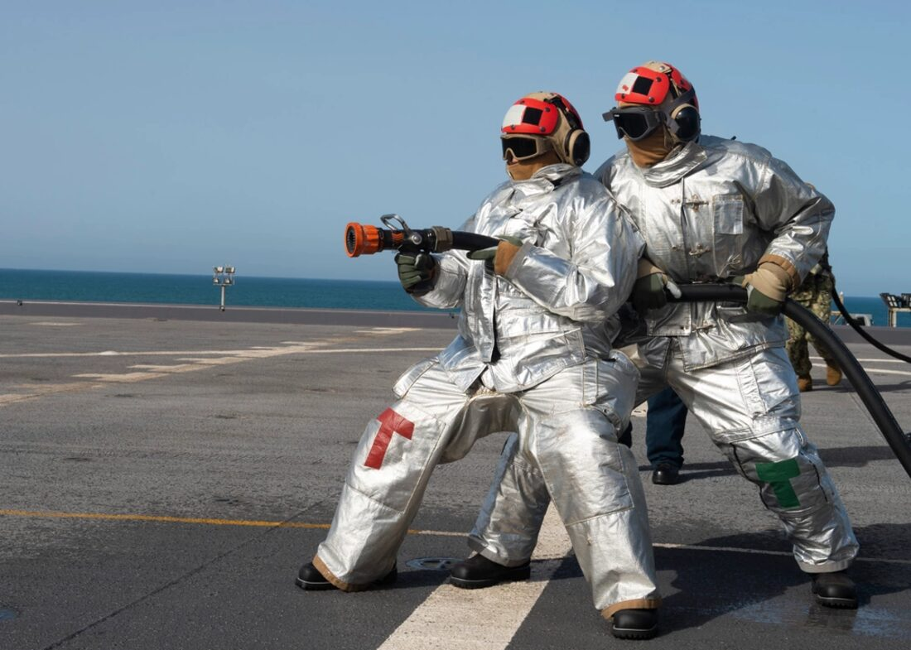
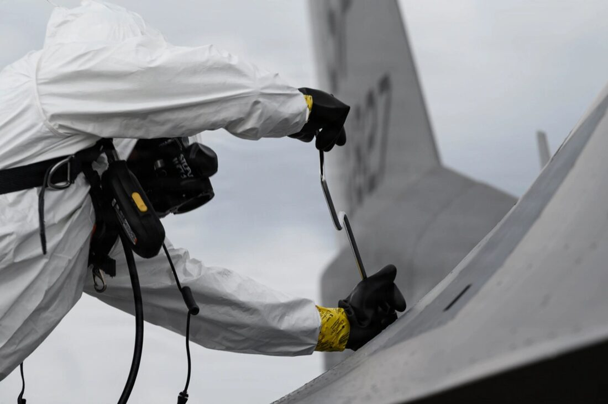
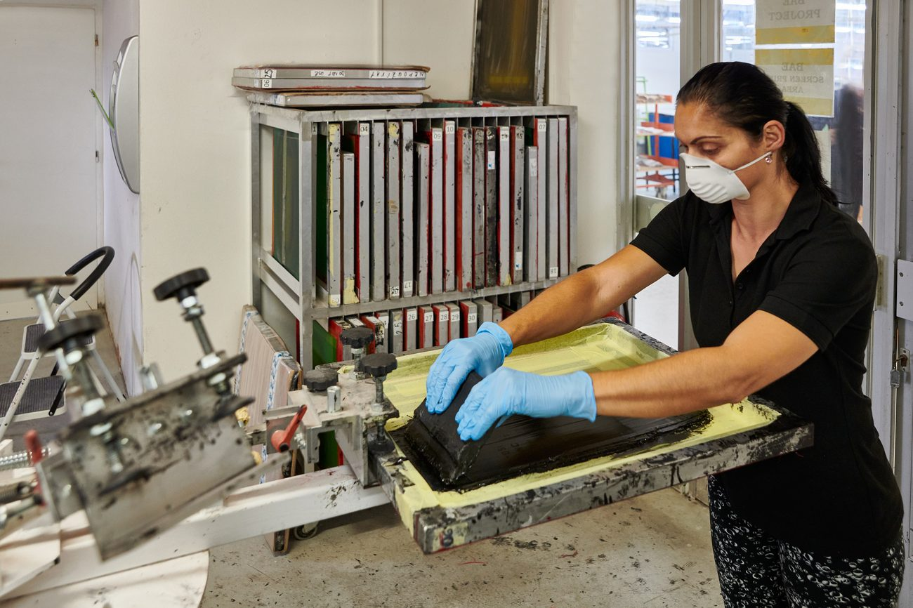

We’re a technical contract manufacturer, not a catalogue. We focus on protective and performance products for demanding sectors. These are the industries we know best and the kinds of product we make for each. Don’t see yours? Talk to us; we develop new products with our customers.

Combat and field clothing, protective covers, load-carriage and pouches, and technical sewn assemblies, made to your specification and standards.

Disposable and reusable protective suits and non-woven protective clothing, with high-frequency welded and taped liquid-barrier seams.

Fire-protective clothing, station and technical wear, and multi-layer FR garments built to perform.

Woven workwear, arc-flash protective suits, high-visibility and PPE manufactured to EN standards.
Single-use and reusable medical and care-sector garments, and cleanroom wear.
Have a technical textile product in mind? We develop and industrialise new products with our customers, from prototype to production.
Our ISO certification covers the manufacture of disposable protective clothing, usable workwear and fire-protective clothing for general industry, so you can be confident the work is made to an audited standard.
Sector imagery shown for illustration, not Horwich products. Defence, CBRN, fire and industrial photos: U.S. Department of Defense (public domain); other images are placeholders pending our own photography.

Much of what we make has to perform: protection, durability, compliance. We work in technical and performance fabrics, manufacture under recognised certifications, and can arrange certification and testing to meet your end-market requirements.
Whether it’s a regulated PPE line, fire-protective workwear or a brand-new garment you’re developing, we’ll help you get the specification, fabric and finish right.
Discuss your requirementWe are a technical contract manufacturer, not a catalogue. We make protective and performance products to your specification, and we develop new products with our customers from prototype to production.
Defence and military, chemical and CBRN, fire and rescue, industrial and workwear, and healthcare. If your sector is not listed, talk to us; we regularly develop new technical products with customers.
Yes. We high-frequency and ultrasonic weld and tape seams to create liquid-barrier and sealed assemblies, alongside all forms of sewing.
Yes. We make single-use and reusable protective clothing, non-woven garments, woven workwear, arc-flash and high-visibility PPE to EN standards.
Our ISO certification covers the manufacture of disposable protective clothing, reusable workwear and fire-protective clothing for general industry, so the work is made to an audited standard.
We produce far more than we can list. Send us your requirement and we’ll tell you how we’d approach it.